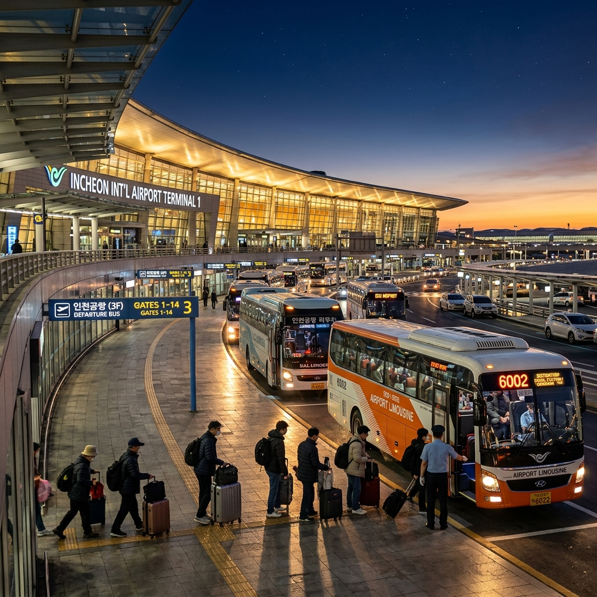
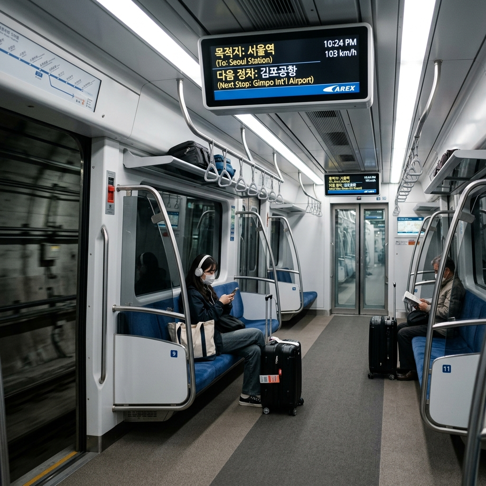
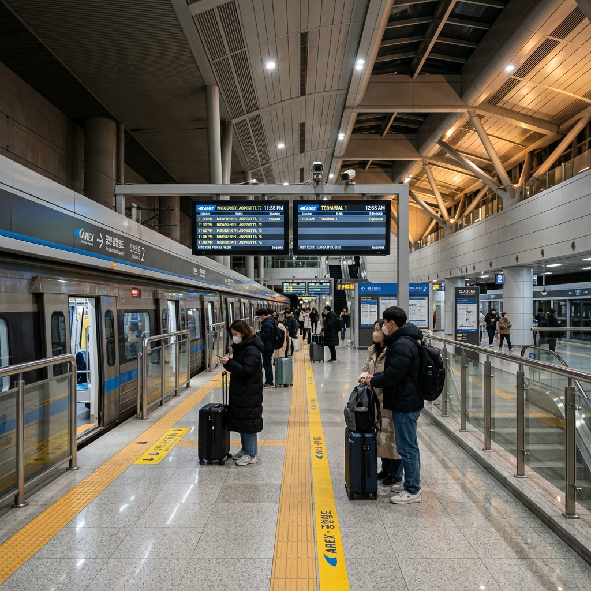

인천국제공항으로 이동하는 교통 수단은 크게 세 가지로 나뉩니다. 공항철도(AREX), 공항버스, 택시 및 대형 차량 서비스입니다. 각각의 특징과 적합한 상황이 다르므로 일정에 맞게 선택해야 합니다.
공항철도(AREX)는 서울역과 인천공항 T1·T2를 직접 연결하는 가장 빠른 대중교통 수단입니다. 직통열차와 일반열차로 나뉘며, 직통열차는 서울역~T1 약 43분, T2까지 약 51분 소요됩니다. 일반열차는 중간 역을 경유해 약 60~70분 걸립니다.
공항버스는 수도권 각 지역에서 공항까지 직행으로 운행합니다. 지하철 연결이 불편한 지역에 거주하는 분들에게 유리하며, 짐이 많은 경우 탑승이 수월합니다. 요금은 노선에 따라 다양하며 보통 편도 8,000~18,000원 수준입니다.
택시·카카오T: 심야나 새벽처럼 대중교통이 없는 시간대에 유용합니다. 서울 도심에서 인천공항까지 요금은 심야 할증 적용 시 8~12만 원대가 됩니다. 공항 리무진 차량이나 카카오T 블랙을 이용하면 차량 크기와 서비스 수준을 선택할 수 있습니다.
공항철도 첫차·막차 시간은 방향과 역에 따라 다르며, 공식 시간표는 코레일 또는 공항철도 홈페이지에서 확인할 수 있습니다. 아래는 대략적인 기준입니다.
인천공항 방향 첫차 (서울 출발 기준): 서울역 출발 첫차는 대략 오전 5시 20분~5시 30분대 수준입니다. 직통열차 기준으로는 이보다 조금 늦은 시간대가 됩니다. 새벽 6시대 비행기를 탄다면 공항철도 첫차로는 탑승 시간이 빠듯할 수 있습니다.
시내 방향 막차 (공항 출발 기준): T1 기준 막차는 오후 11시 05분~11시 20분대, T2 기준으로는 오후 10시 45분~11시 00분대 수준입니다. 자정 이후 도착하는 비행기라면 공항철도 막차를 놓칠 수 있습니다.
⚠️ 공항철도 시간표는 계절·운행 조정에 따라 변동될 수 있습니다. 출국 당일 정확한 시간은 공항철도 공식 홈페이지(arex.or.kr) 또는 코레일 앱에서 반드시 재확인하세요.
새벽 비행기를 위한 공항버스는 가장 이른 노선이 오전 4시 15분~4시 20분대부터 운행을 시작합니다. 서울 주요 노선 기준 첫차는 일반적으로 새벽 4시 15분 전후이며, 지역에 따라 다를 수 있습니다.
버스 노선마다 출발 터미널과 경유지가 다릅니다. 예를 들어 강남 출발 노선, 홍대 출발 노선, 잠실 출발 노선 등 지역별로 다양한 노선이 있으며, 거주 지역에서 가장 가까운 정류장을 확인해야 합니다.
공항버스 예약 및 운행 노선 전체는 공항리무진 홈페이지(airportlimousine.co.kr) 또는 KAL리무진 등 운행사 홈페이지에서 확인 가능합니다. 노선 검색 시 출발 정류장을 입력하면 첫차·막차 시간과 요금을 바로 조회할 수 있습니다.
새벽 4시 이전에 공항에 도착해야 한다면 사실상 공항버스 첫차도 빠듯합니다. 이 경우 전날 공항 인근 숙소에서 하룻밤 자거나, 택시·차량 서비스를 이용하는 것이 현실적입니다.

자정 이후 공항에 도착하면 공항철도와 공항버스 막차가 이미 끊긴 상황입니다. 이 경우 선택할 수 있는 방법은 다음과 같습니다.
심야 공항버스(올빼미 버스): 심야 시간대 일부 노선이 별도로 운행됩니다. 서울 주요 지점을 연결하는 심야 버스가 있으며, 자정 전후 출발 시각이 있을 수 있습니다. 정확한 노선과 시간은 공항버스 운행사 홈페이지를 확인하세요.
택시: 심야 도착 후 가장 편리한 이동 수단입니다. 인천공항 T1·T2 출구 앞에 택시 승강장이 마련되어 있습니다. 카카오T 앱으로 미리 배차를 예약해 두면 도착 즉시 탑승할 수 있어 대기 시간을 줄일 수 있습니다. 심야 할증이 적용되는 시간대(자정~오전 4시)에는 기본 요금이 올라갑니다.
공항 내 숙박(야간 대기): 자정 이후 도착하고 다음 날 새벽 연결 교통이 있다면, 공항 내에서 대기하는 방법도 있습니다. T1과 T2 모두 24시간 운영 중이며 편의시설(편의점, 카페, 휴식 공간)이 갖춰져 있습니다. 단, 보안 구역 밖에서는 좌석이 제한되므로 장시간 대기에는 불편함이 있습니다.
인천국제공항 터미널은 T1(제1여객터미널)과 T2(제2여객터미널)으로 나뉩니다. 항공사에 따라 이용하는 터미널이 달라지므로 출발 전 본인의 탑승 터미널을 반드시 확인해야 합니다.
T1 이용 항공사 예시: 아시아나항공, 제주항공, 진에어, 티웨이항공, 외항사 다수. 공항철도로는 '인천공항1터미널역'에서 하차합니다.
T2 이용 항공사 예시: 대한항공, 델타항공, KLM, 에어프랑스, 아에로멕시코. 공항철도로는 '인천공항2터미널역'(종점)에서 하차합니다. T2는 T1 대비 더 안쪽에 위치해 공항철도 기준으로 약 10분이 추가 소요됩니다.
T1과 T2 사이는 무료 셔틀버스로 이동 가능합니다. 잘못 도착했을 경우 셔틀버스로 이동하면 되지만, 20~30분이 추가로 걸리므로 터미널 확인은 필수입니다.
어떤 교통 수단을 선택할지 결정하기 전에 다음 사항을 먼저 확인하세요.
✅ 비행기 출발 또는 도착 시각이 대중교통 운영 시간과 맞는가?
✅ 공항까지 짐이 많은가? (짐이 많다면 공항버스나 택시가 편리)
✅ 출발 지역이 공항철도 연결 역과 가까운가?
✅ 심야·새벽 시간대라면 택시 예약이 필요한가?
✅ T1과 T2 중 어느 터미널을 이용하는가?
여행 스트레스의 상당 부분은 공항 교통 불확실성에서 옵니다. 출국 2~3일 전에 교통 수단과 시간을 미리 확정해 두면, 당일 훨씬 여유 있게 움직일 수 있습니다.
